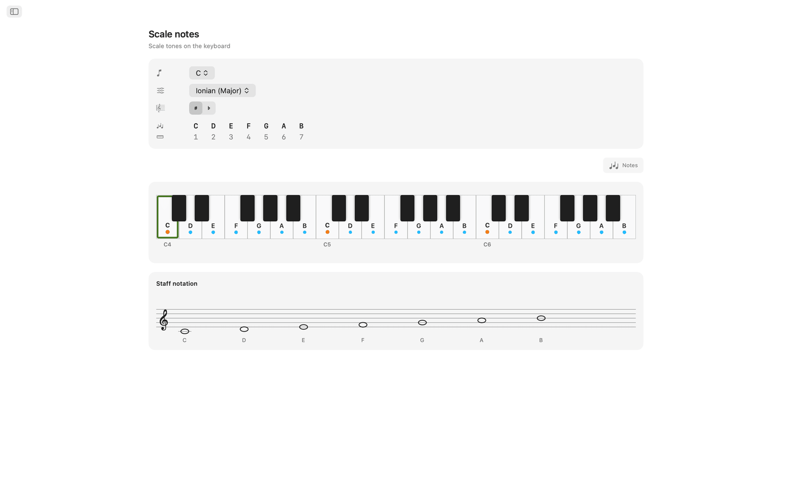
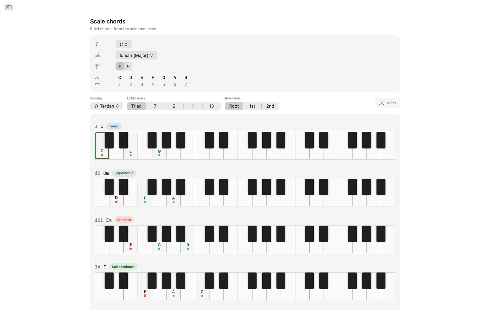
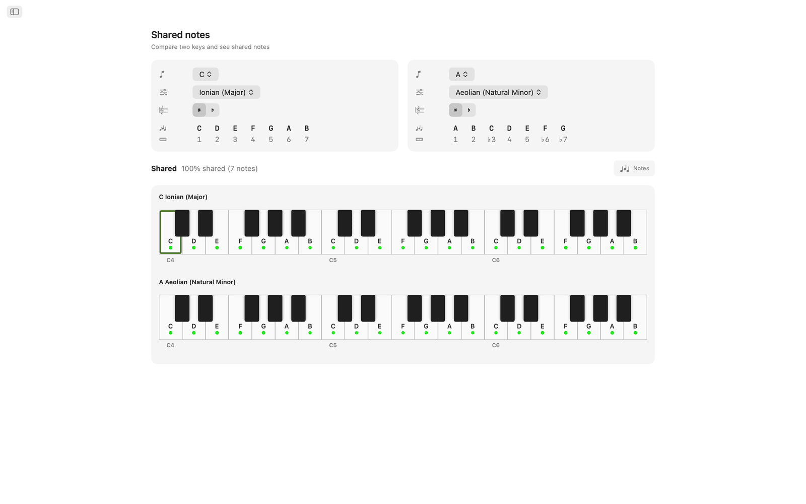
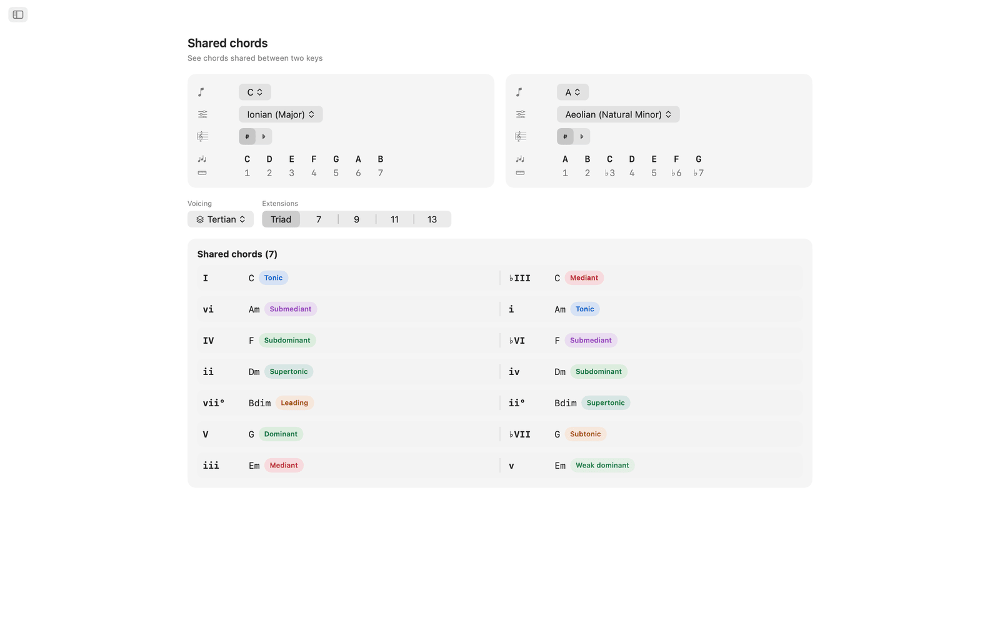
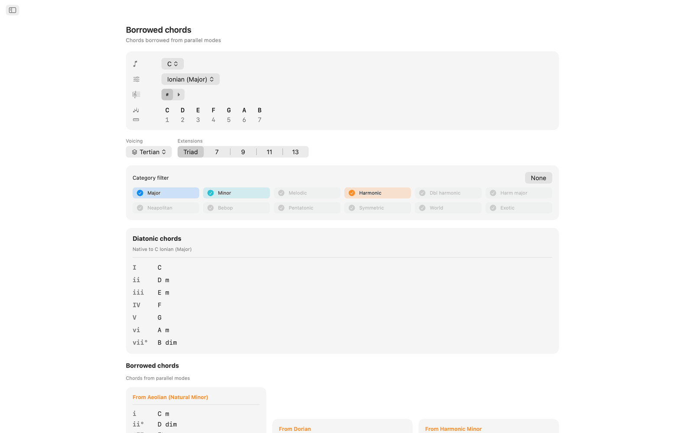
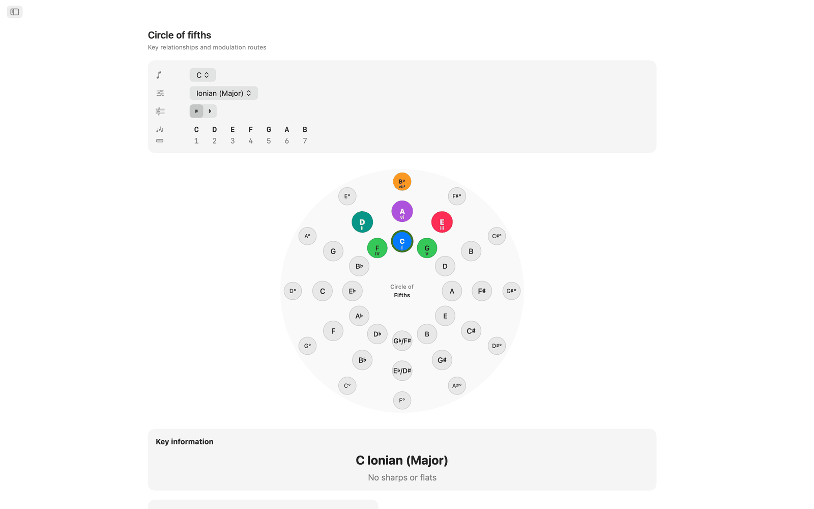
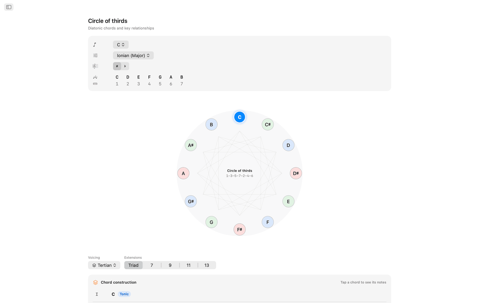
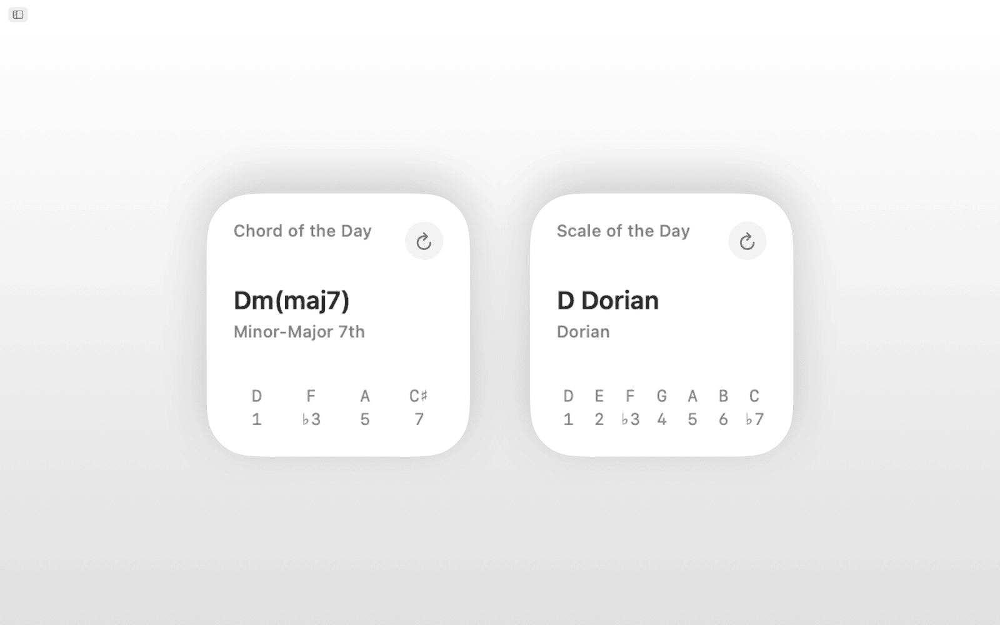
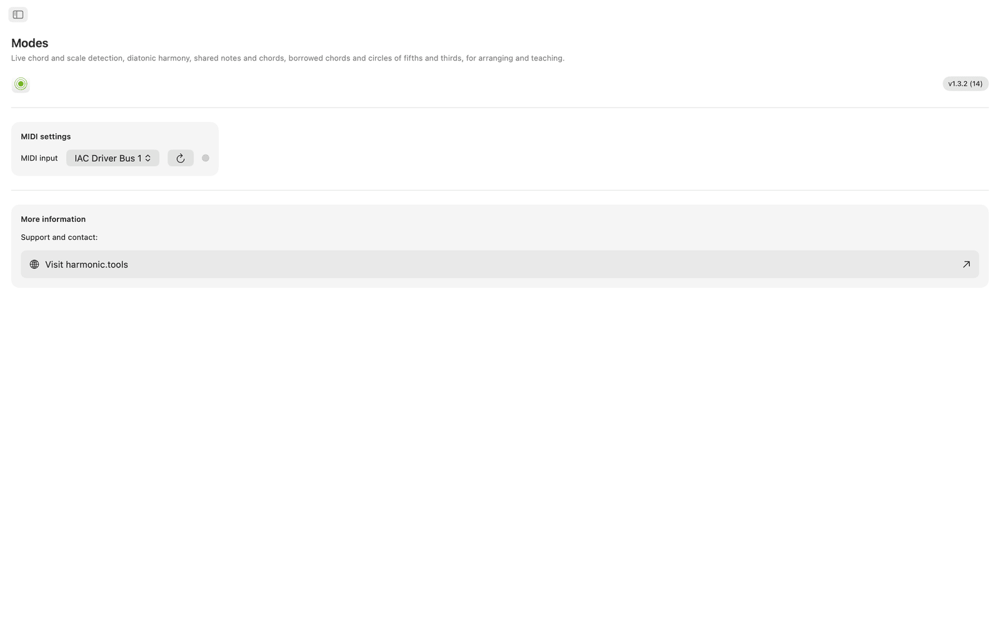

Modes for macOS
Modes is a music theory app for macOS covering scales, chords, voicings and modulation paths, in a sidebar app that can sit beside your DAW. Siri, Shortcuts, Spotlight search and Notification Center widgets are supported.
- Scale & Chord Finder with MIDI + on-screen keyboard
- 65 scales · 21 chord types · 8 voicing families
- Shared Notes, Shared Chords, Borrowed Chords
- Interactive Circle of Fifths + Circle of Thirds
- Siri, Shortcuts, Spotlight & Notification Center widgets
Screenshots
Includes light and dark screenshots that follow the website theme.











Features
- Play notes on the interactive multi-octave keyboard or connect a MIDI controller and Modes identifies the chord you're playing in real time: major, minor, diminished, augmented, extended, suspended and more. It ranks every matching scale by note coverage, and you can filter the results by scale category (diatonic, melodic minor, harmonic minor, pentatonic, bebop, symmetric, world and more).
- The 65 scales and modes include the seven diatonic modes, melodic minor, harmonic minor, double harmonic, Neapolitan, bebop, pentatonic, blues, whole tone, diminished, augmented, and world scales like Hirajōshi, Kumoi, In Sen, Persian and Enigmatic. Every scale is spelled out with interval tokens and highlighted on the keyboard.
- Pick any root and scale to see every in-key note highlighted across two octaves, so you can see which notes belong and where the root sits.
- Modes generates diatonic triads or sevenths for every degree of the chosen scale, with Roman numerals, chord names, harmonic function badges (tonic, subdominant, dominant and 30+ detailed labels) and voiced keyboard renderings, all aligned for comparison.
- Chords can be built in tertian, sus2, sus4, sixth, add, quartal, quintal and power voicings, from triads up to thirteenths, with every extension labelled automatically.
- Shared Notes and Shared Chords compare any two keys side by side: which notes overlap, which are unique and which chords both keys share. That helps with modulation and reharmonisation.
- The Borrowed Chords view lists your key's native diatonic chords alongside every borrowed option from parallel modes, grouped by source mode.
- The Circle of Fifths is an interactive dual ring (major outside, natural minor inside). Click a sector to retune the key. Dominant, subdominant, relative, parallel and nearby keys are shown, with modulation difficulty badges and key-signature details.
- The Circle of Thirds shows chromatic mediant relationships on a diminished-cycle diagram. Major and minor buttons for every pitch class reveal mediant, relative and parallel connections, which is useful for cinematic and neo-Riemannian modulation planning.
- Connect any class-compliant MIDI keyboard or controller. Played notes merge with on-screen clicks for detection.
- Ask Siri or run a Shortcut to show a scale's notes, list the chords in a key, identify a scale or chord, spell a chord, find the interval between two notes, transpose a note, or open the circle of fifths and borrowed chords. Scales and chords are also indexed in Spotlight.
- The Scale of the Day and Chord of the Day widgets can be added to Notification Center.
On the desktop
- Runs entirely offline. No account, no ads, no tracking
- Native macOS app with sidebar navigation
- Dark-mode aware interface that follows your system appearance
- Enharmonic spelling: automatic, sharps, or flats
- Resizable window. Keep it open beside your DAW
Accessibility
Works with VoiceOver and Voice Control, and can be used from the keyboard, with arrow keys and Space.
Modes is free to try for 7 days. After the trial, full access is a one-time purchase, with no subscription.
Music theory coverage
Reference for the scales, modes, chords, voicings, intervals and harmonic tools in the app, with the note formulas behind each one.
Scales & modes 65 total
Every scale is spelled with interval tokens and highlighted across the keyboard, with automatic, sharp, or flat enharmonic spelling.
Major modes (diatonic)
| Ionian (Major) | 1 2 3 4 5 6 7 |
| Dorian | 1 2 ♭3 4 5 6 ♭7 |
| Phrygian | 1 ♭2 ♭3 4 5 ♭6 ♭7 |
| Lydian | 1 2 3 ♯4 5 6 7 |
| Mixolydian | 1 2 3 4 5 6 ♭7 |
| Aeolian (Natural Minor) | 1 2 ♭3 4 5 ♭6 ♭7 |
| Locrian | 1 ♭2 ♭3 4 ♭5 ♭6 ♭7 |
Melodic minor (jazz minor) modes
| Melodic Minor (Jazz Minor) | 1 2 ♭3 4 5 6 7 |
| Dorian ♭2 (Phrygian ♮6) | 1 ♭2 ♭3 4 5 6 ♭7 |
| Lydian Augmented (Lydian ♯5) | 1 2 3 ♯4 ♯5 6 7 |
| Lydian Dominant (Lydian ♭7) | 1 2 3 ♯4 5 6 ♭7 |
| Mixolydian ♭6 (Aeolian Dominant) | 1 2 3 4 5 ♭6 ♭7 |
| Locrian ♯2 (Locrian ♮2) | 1 2 ♭3 4 ♭5 ♭6 ♭7 |
| Altered (Super-Locrian) | 1 ♭2 ♭3 ♭4 ♭5 ♭6 ♭7 |
Harmonic minor modes
| Harmonic Minor | 1 2 ♭3 4 5 ♭6 7 |
| Locrian ♮6 | 1 ♭2 ♭3 4 ♭5 6 ♭7 |
| Ionian ♯5 (Augmented Major) | 1 2 3 4 ♯5 6 7 |
| Dorian ♯4 (Ukrainian Dorian) | 1 2 ♭3 ♯4 5 6 ♭7 |
| Phrygian Dominant | 1 ♭2 3 4 5 ♭6 ♭7 |
| Lydian ♯2 | 1 ♯2 3 ♯4 5 6 7 |
| Super Locrian ♭♭7 (Altered ♭♭7) | 1 ♭2 ♭3 ♭4 ♭5 ♭6 ♭♭7 |
Double harmonic minor (Hungarian minor) modes
| Hungarian Minor (Double Harmonic Minor) | 1 2 ♭3 ♯4 5 ♭6 7 |
| Oriental (Mode 2) | 1 ♭2 3 4 ♭5 6 ♭7 |
| Ionian ♯2 ♯5 | 1 ♯2 3 4 ♯5 6 7 |
| Locrian ♭♭3 ♭♭7 | 1 ♭2 ♭♭3 4 ♭5 ♭6 ♭♭7 |
| Double Harmonic Major | 1 ♭2 3 4 5 ♭6 7 |
| Lydian ♯2 ♯6 | 1 ♯2 3 ♯4 5 ♯6 7 |
| Ultraphrygian | 1 ♭2 ♭3 ♭4 5 ♭6 ♭♭7 |
Harmonic major
| Harmonic Major (Ionian ♭6) | 1 2 3 4 5 ♭6 7 |
| Double Harmonic Major (Byzantine) | 1 ♭2 3 4 5 ♭6 7 |
Neapolitan minor modes
| Neapolitan Minor | 1 ♭2 ♭3 4 5 ♭6 7 |
| Lydian ♯6 | 1 2 3 ♯4 5 ♯6 7 |
| Mixolydian Augmented | 1 2 3 4 ♯5 6 ♭7 |
| Romani Minor (Aeolian ♯4) | 1 2 ♭3 ♯4 5 ♭6 ♭7 |
| Locrian Dominant | 1 ♭2 3 4 ♭5 ♭6 ♭7 |
| Ionian ♯2 | 1 ♯2 3 4 5 6 7 |
| Ultralocrian | 1 ♭2 ♭♭3 ♭4 ♭5 ♭6 ♭♭7 |
Neapolitan major modes
| Neapolitan Major | 1 ♭2 ♭3 4 5 6 7 |
| Leading Whole Tone (Lydian Augmented ♯6) | 1 2 3 ♯4 ♯5 ♯6 7 |
| Lydian Augmented Dominant | 1 2 3 ♯4 ♯5 6 ♭7 |
| Lydian Dominant ♭6 | 1 2 3 ♯4 5 ♭6 ♭7 |
| Major Locrian | 1 2 3 4 ♭5 ♭6 ♭7 |
| Half-Diminished ♭4 (Altered Dominant ♯2) | 1 2 ♭3 ♭4 ♭5 ♭6 ♭7 |
| Altered Dominant ♭♭3 | 1 ♭2 ♭♭3 ♭4 ♭5 ♭6 ♭7 |
Bebop
| Bebop Dominant | 1 2 3 4 5 6 ♭7 7 |
| Bebop Major | 1 2 3 4 5 ♭6 6 7 |
Pentatonic & blues
| Pentatonic Major | 1 2 3 5 6 |
| Pentatonic Suspended (Egyptian) | 1 2 4 5 ♭7 |
| Pentatonic Blues Minor (Man Gong) | 1 ♭3 4 ♭6 ♭7 |
| Pentatonic Blues Major (Yo) | 1 2 4 5 6 |
| Pentatonic Minor | 1 ♭3 4 5 ♭7 |
| Pentatonic Japanese (In) | 1 ♭2 4 5 ♭6 |
| Blues | 1 ♭3 4 ♭5 5 ♭7 |
| Blues (Major) | 1 2 ♭3 3 5 6 |
Symmetric & synthetic
| Whole Tone | 1 2 3 ♯4 ♯5 ♭7 |
| Diminished (Half-Whole) | 1 ♭2 ♭3 3 ♭5 5 6 ♭7 |
| Diminished (Whole-Half) | 1 2 ♭3 4 ♭5 ♭6 6 7 |
| Augmented (Hexatonic) | 1 ♭3 3 5 ♯5 7 |
| Prometheus (Mystic Hexatonic) | 1 2 3 ♯4 6 ♭7 |
Japanese pentatonics
| Hirajōshi | 1 2 ♭3 5 ♭6 |
| Kumoi | 1 2 ♭3 5 6 |
| In Sen | 1 ♭2 4 5 ♭7 |
| Iwato | 1 ♭2 4 ♭5 ♭7 |
World / other
| Persian | 1 ♭2 3 4 ♭5 ♭6 7 |
| Enigmatic | 1 ♭2 3 ♯4 ♯5 ♯6 7 |
Chords
Detected chord types 21
Chords are detected from the notes you play, with 9th, 11th, and 13th tensions automatically appended (shown as add9, add11, add13 when no 7th is present). When the lowest note sits below the chord it is treated as a bass note and shown as a slash chord (e.g. C/E).
| Chord | Symbol | Intervals |
|---|---|---|
| Major | — | 1 3 5 |
| Minor | m | 1 ♭3 5 |
| Diminished | dim | 1 ♭3 ♭5 |
| Augmented | aug | 1 3 ♯5 |
| Suspended 2nd | sus2 | 1 2 5 |
| Suspended 4th | sus4 | 1 4 5 |
| Power Chord | 5 | 1 5 |
| Major 6th | 6 | 1 3 5 6 |
| Minor 6th | m6 | 1 ♭3 5 6 |
| Dominant 7th | 7 | 1 3 5 ♭7 |
| Major 7th | maj7 | 1 3 5 7 |
| Minor 7th | m7 | 1 ♭3 5 ♭7 |
| Half-Diminished 7th | m7♭5 | 1 ♭3 ♭5 ♭7 |
| Diminished 7th | dim7 | 1 ♭3 ♭5 ♭♭7 |
| Minor-Major 7th | m(maj7) | 1 ♭3 5 7 |
| Augmented 7th | aug7 | 1 3 ♯5 ♭7 |
| Augmented Major 7th | aug(maj7) | 1 3 ♯5 7 |
| Major (♭5) | (♭5) | 1 3 ♭5 |
| Diminished (♭♭3) | dim(♭♭3) | 1 ♭♭3 ♭5 |
| Dominant 7sus4 | 7sus4 | 1 4 5 ♭7 |
| Dominant 7sus2 | 7sus2 | 1 2 5 ♭7 |
Chord qualities (builder) 6
Quality options in the chord builder, each with its Roman-numeral analysis.
| Quality | Symbol | Roman numeral |
|---|---|---|
| Major | — | Uppercase (I, IV, V…) |
| Minor | m | Lowercase (ii, iii, vi…) |
| Diminished | ° | Lowercase + ° (vii°) |
| Augmented | + | Uppercase + + (III+) |
| Major (♭5) | (♭5) | Uppercase + (♭5) |
| Diminished (♭♭3) | °(♭♭3) | Lowercase + °(♭♭3) |
Chord voicings 8 types
Every chord can be voiced eight ways, from stacked-thirds tertian voicings through quartal and quintal stacks.
| Voicing | Sizes | Description |
|---|---|---|
| Tertian | Triad, 7th, 9th, 11th, 13th | Standard stacked-thirds voicings |
| sus2 | Triad, 7th | Replaces the 3rd with the 2nd |
| sus4 | Triad, 7th | Replaces the 3rd with the 4th |
| 6th | 6th, 6/9 | Adds the 6th (and optionally 9th) |
| Add | add9, add11 | Adds a tone without the 7th |
| Quartal | 3-note, 4-note | Built in stacked 4ths |
| Quintal | 3-note, 4-note | Built in stacked 5ths |
| Power | 2-note | Root + 5th only |
Chord sizes
| Size | Label | Notes |
|---|---|---|
| Power | 5 | 2 |
| Triad | Triad | 3 |
| Sixth | 6 | 4 |
| Six-Nine | 6/9 | 5 |
| Seventh | 7 | 4 |
| Ninth | 9 | 5 |
| Eleventh | 11 | 6 |
| Thirteenth | 13 | 7 |
| Add 9 | add9 | 4 |
| Add 11 | add11 | 4 |
| Quartal 4-note | 4×4 | 4 |
| Quintal 4-note | 5×4 | 4 |
Intervals 12 chromatic
Every chromatic interval with its inversion.
| Semitones | Interval | Inversion |
|---|---|---|
| 0 | Unison | Octave |
| 1 | Minor 2nd | Major 7th |
| 2 | Major 2nd | Minor 7th |
| 3 | Minor 3rd | Major 6th |
| 4 | Major 3rd | Minor 6th |
| 5 | Perfect 4th | Perfect 5th |
| 6 | Tritone | Tritone |
| 7 | Perfect 5th | Perfect 4th |
| 8 | Minor 6th | Major 3rd |
| 9 | Major 6th | Minor 3rd |
| 10 | Minor 7th | Major 2nd |
| 11 | Major 7th | Minor 2nd |
Harmonic analysis 31 function labels
Diatonic chords are classified into three functional families.
Tonic family
Subdominant family
Dominant family
Keys
All 12 chromatic keys in both sharp and flat spellings. Enharmonic spelling can be set to automatic (contextual), sharps, or flats.
Sharp keys
Flat keys
Circle of Fifths
Circle-of-fifths navigation with related-key data for every key.
C → G → D → A → E → B → F♯/G♭ → D♭ → A♭ → E♭ → B♭ → F → C
Each key shows its relative minor/major, parallel major/minor, dominant, subdominant, supertonic, and mediant relationships, with modulation-difficulty badges and key-signature details.
Circle of Thirds
Organises pitches by alternating major and minor thirds (4-3-4-3 semitones) into a 24-note repeating sequence (12 major + 12 minor positions): useful for understanding how triads and 7th chords stack.
- Notes appear in 1-3-5-7-2-4-6 order (e.g. C-E-G-B-D-F-A), the order in which chord tones stack.
- The DFACEGB mnemonic covers diatonic thirds across the flat, natural, and sharp key families.
- It is made of three diminished-7th cycles of four positions each.
- It applies to Coltrane changes and chromatic-mediant relationships.
Borrowed chords (modal interchange)
For any key, the app lists both the diatonic chords and the borrowed chords drawn from parallel modes, each labelled with an altered Roman numeral and a common-usage description.
Borrowing sources by scale
| Current scale | Common borrowing sources |
|---|---|
| Ionian (Major) | Aeolian, Dorian, Phrygian, Mixolydian, Harmonic Minor, Melodic Minor, Lydian |
| Aeolian (Natural Minor) | Ionian, Mixolydian, Dorian, Harmonic Minor, Phrygian Dominant |
| Dorian | Ionian, Aeolian, Mixolydian, Harmonic Minor |
| Phrygian | Aeolian, Harmonic Minor, Phrygian Dominant, Ionian |
| Lydian | Ionian, Aeolian, Mixolydian |
| Mixolydian | Ionian, Aeolian, Dorian |
| Locrian | Aeolian, Phrygian, Harmonic Minor |
| Harmonic Minor | Aeolian, Ionian, Melodic Minor |
| Melodic Minor | Harmonic Minor, Aeolian, Ionian |
| Phrygian Dominant | Harmonic Minor, Aeolian, Phrygian |
| Other scales | Ionian, Aeolian (basic major/minor borrowing) |
Common borrowed chords into major
| Chord | Source | Typical use |
|---|---|---|
| iv | Aeolian / Harmonic Minor | Most common borrowed chord: melancholy subdominant |
| ♭VI | Aeolian | Pop/rock deceptive resolution |
| ♭VII | Mixolydian / Aeolian | Rock/blues cadence (subtonic) |
| ♭III | Aeolian | Mediant shift between parallel major/minor |
| i | Aeolian | Minor tonic colour |
| ii° | Aeolian | Darker predominant using ♭6 |
| vii°7 | Harmonic Minor | Fully diminished, strong resolution to I |
| ♭VI+ | Harmonic Minor | Augmented chromatic voice leading |
| ♭II (Neapolitan) | Phrygian | Dramatic pre-dominant |
| II | Dorian | Major supertonic, secondary-dominant feel |